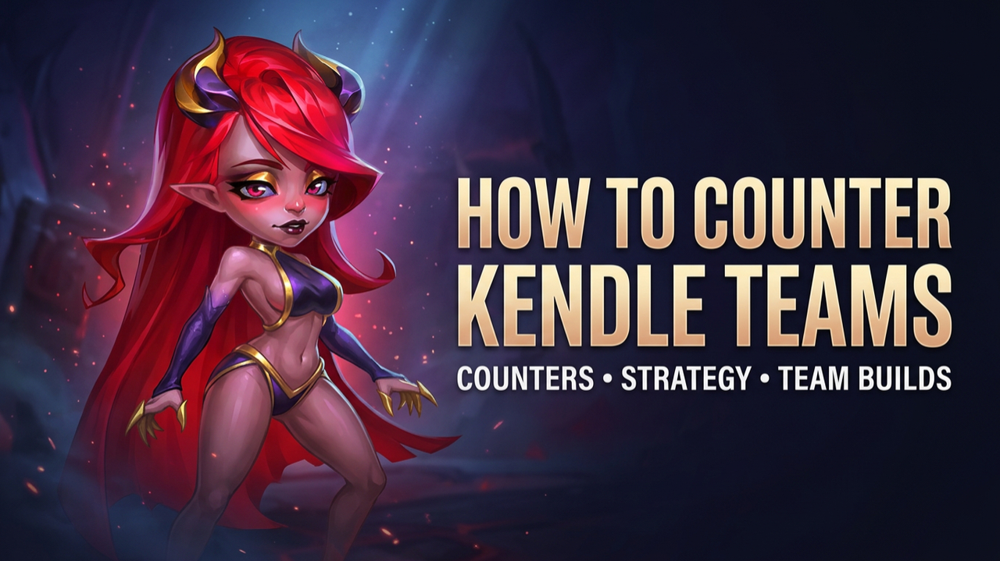

HOW TO COUNTER
KENDLE TEAMS
Cleaver, Byrna, Dorian, Kendle and Aidan can be an extremely difficult defense to break consistently. Our testing shows that finding the right five Heroes is only part of the answer. Development and Relic levels can completely change the battle.
CLEAVER • BYRNA • DORIAN • KENDLE • AIDAN
This is the Kendle composition used as the main defensive target during these tests. The challenge is not simply finding something that can win — it is finding options capable of producing consistent results as development and Relic levels increase.
IMPORTANT: These are not guaranteed counters. Results can change depending on Relic levels, Glyphs, Skins and overall Hero development. The same five Heroes can produce very different results on two different accounts. Test your own setup before investing specifically for this matchup.
YASMINE VARIATION
YASMINE • BYRNA • CROW • GUUS • OCTAVIA
Yasmine can work against this Kendle composition, but she is not a plug-and-play solution. Her development matters, and the Relic and Glyph levels of the supporting Heroes can noticeably affect the results.
In our tests, stronger development improved the results. Yasmine needs the opportunity to create the opening, while Byrna must survive the pressure. Crow contributes to the battlefield while Guus and Octavia provide the support required to keep the team functioning.
This is an option worth testing, but it should not be treated as a guaranteed answer to Kendle.
FOLIO VARIATION
BYRNA • FOLIO • DORIAN • KENDLE • AIDAN
This was one of the strongest variations tested. The major change is removing Cleaver and replacing him with Folio.
Byrna can hold the front line long enough to give Folio the opportunity to activate his ultimate. Folio can then create the disruption needed to interfere with the enemy team's momentum.
Once that opening appears, the objective is clear: focus Kendle. If the battlefield can be destabilized and Kendle removed, the rest of the composition becomes easier to control.
The results were promising, but not completely stable. This remains a variation worth including in your own tests.
TRISTAN RELIC TEST
CLEAVER • TRISTAN • DRAYNE • BYRNA • FOLIO
This produced the best results of the three counter teams during our testing when the Heroes were tested with Relic Level 20.
It also became particularly important when tested against the defensive composition at Relic Level 30. Of the options tested under those conditions, this team showed the clearest potential without requiring every counter Hero to be pushed directly to Relic Level 30.
Why Tristan's Relic Level Matters
Changing Tristan's Relic level produced a major difference in stability during these tests. With Tristan at Relic Level 20, the team produced substantially stronger results. When Tristan was reduced to Relic Level 10 while the supporting setup remained developed, victories were still possible — but the stability dropped significantly.
EVERYTHING COUNTS.
Against a highly developed Kendle defense, there are no shortcuts. The counter composition matters, but so does the development behind every Hero. A small difference in investment can change a successful counter into an inconsistent one.
DEVELOPMENT MATTERS
FINAL TAKEAWAY: The three teams above showed different levels of potential during our testing, but none should be treated as a universal or automatic Kendle counter. Your own Relics, Glyphs, Skins and Hero development can change the outcome. Testing remains essential.